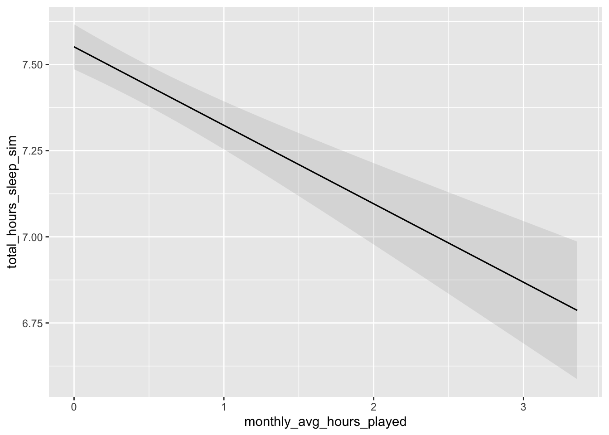

Code
if (!require("pacman")) install.packages("pacman")
library(pacman)
p_load(tidyverse, lme4, marginaleffects, glmmTMB, mice, ordinal, modelsummary, lubridate, data.table)
studyStartDate <- as_datetime("2024-05-01 00:00:00")if (!require("pacman")) install.packages("pacman")
library(pacman)
p_load(tidyverse, lme4, marginaleffects, glmmTMB, mice, ordinal, modelsummary, lubridate, data.table)
studyStartDate <- as_datetime("2024-05-01 00:00:00")# don't use read_csv for the synPanelClean! no idea why but it guesses column
# type wrong, leading to a lot of NA imports
data.panel <- fread("data/data-synthetic-clean/synPanelClean.csv.gz") |> # requires that the preprocessing script has been run
left_join(read_csv("data/data-synthetic-clean/synIntakeClean.csv.gz"), by = "pid") |>
dplyr::select(pid, wave, region, psqi_6, starts_with(c("mctq", "eps", "psqi")), total_hours_sleep, wemwbs,
age_scaled, bmi_scaled, SES_index_scaled, msf_sc_numeric, gender) |>
mutate(
psqi_6_ord = factor(psqi_6, ordered = TRUE),
pid = as.character(pid)
)
data.nin <- read_csv("data/data-synthetic-clean/synNintendoClean.csv.gz")
data.xbox <- read_csv("data/data-synthetic-clean/synXboxClean.csv.gz")
data.steam <- read_csv("data/data-synthetic-clean/synSteamClean.csv.gz")
data.android <- read_csv("data/data-synthetic-raw/synAndroid.csv.gz")
data.ios <- read_csv("data/data-synthetic-raw/syniOS.csv.gz")# merge xbox_balanced and steam_balanced and nin_balanced
data.gaming <- bind_rows(data.xbox, data.steam, data.nin) |>
mutate(
# redefine day to begin and end at 4am, rather than midnight, so we can properly
# assign late-night sessions to the previous calendar day
dateRecoded = if_else(hour(sessionStart) < 6, date - 1, date),
# calculate minutes_played for data.gaming using sessionEnd and sessionStart
# create a binary variable for data.gaming called latenight if the sessionStart is between 23:00 and 06:00
# create an isWeekend variable for data.gaming if the sessionStart is on a Saturday, Sunday or Friday
minutes_played = as.numeric(difftime(sessionEnd, sessionStart, units = "mins")),
latenight = ifelse(hour(sessionStart) >= 23 | hour(sessionStart) < 6, 1, 0),
isWeekend = ifelse(weekdays(sessionStart) %in% c("Friday", "Saturday"), 1, 0),
# calculate late night using lubridate::interval objects
interval_gaming = interval(sessionStart, sessionEnd),
interval_latenight = interval(dateRecoded + hours(23), dateRecoded + hours(30)), # gets the 11pm to 6am following day interval from date
latenightMinutes = as.numeric(intersect(interval_gaming, interval_latenight))/60 # calculate overlap in minutes
) |>
# assign each session to a wave based on the date, if the date is within 4
# weeks of the start of the study, it is wave 2, if it is between 4 weeks and
# 8 weeks it is wave 4, if it is between 8 weeks and 12 weeks it is wave 6
mutate(
days_since_start = as.numeric(difftime(sessionStart, studyStartDate, units = "days")),
month = case_when(
day >= 0 & day <= 28 ~ 2,
day >= 29 & day <= 56 ~ 4,
day >= 57 & day <= 84 ~ 6,
TRUE ~ NA_real_
),
# Define biweekly waves (14-day intervals) that end at day 84
wave = case_when(
day >= 0 & day <= 14 ~ 1,
day >= 15 & day <= 28 ~ 2,
day >= 29 & day <= 42 ~ 3,
day >= 43 & day <= 56 ~ 4,
day >= 57 & day <= 70 ~ 5,
day >= 71 & day <= 84 ~ 6,
TRUE ~ NA_real_ # Assign NA for days beyond 84
),
pid = as.character(pid)
)
# group gaming by PID, wave and latenight and calculate daily average minutes_played
gamingMonthly <- data.gaming |>
group_by(pid, month, isWeekend) %>%
summarise(
monthly_avg_minutes_played = sum(latenightMinutes)/28,
) |>
left_join(data.panel |> dplyr::select(-msf_sc_numeric) |> filter(wave %in% c(2, 4, 6)),
by = c("pid","month" = "wave")) |>
left_join(data.panel |> dplyr::select(pid, msf_sc_numeric) |> filter(!is.na(msf_sc_numeric)),
by = c("pid")) |> # hacky way to make sure chronotype (measured in wave 1 only) doesn't get lost
mutate(monthly_avg_minutes_played = replace_na(monthly_avg_minutes_played, 0)) |>
ungroup() |>
arrange(as.integer(pid), month)
# group gaming by PID, wave and latenight and calculate daily average minutes_played
gamingBiweekly <- data.gaming |>
group_by(pid, wave, isWeekend) |>
summarise(
biweekly_avg_minutes_played = sum(latenightMinutes)/14,
) |>
left_join(data.panel |> dplyr::select(-msf_sc_numeric), by = c("pid", "wave")) |>
left_join(data.panel |> dplyr::select(pid, msf_sc_numeric) |> filter(!is.na(msf_sc_numeric)),
by = c("pid")) |> # hacky way to make sure chronotype (measured in wave 1 only) doesn't get lost
mutate(biweekly_avg_minutes_played = replace_na(biweekly_avg_minutes_played, 0)) |>
ungroup() |>
arrange(as.integer(pid), wave) |>
dplyr::select(pid, wave, msf_sc_numeric, everything())Multilevel ordinal regression whereby monthly average minutes played predicts sleep quality (PSQI), controlling for age, BMI, SES index, region, and whether playtime falls on a weekend, with a random intercept and slope for participants.
# For psqi_6 1 means Very good, 2 means Fairly good, 3 means Fairly bad, 4 means Very bad
# Fit the model with rescaled covariates
model.h1a <- clmm(psqi_6_ord ~ monthly_avg_minutes_played + (1 + monthly_avg_minutes_played | pid) +
age_scaled + bmi_scaled + SES_index_scaled + region + isWeekend,
data = gamingMonthly)
modelsummary(
list(`Model H1a` = model.h1a),
fmt = 2,
estimate = "{estimate} [{conf.low}, {conf.high}]{stars}",
statistic = NULL
)| Model H1a | |
|---|---|
| 1|2 | -1.45 [-1.61, -1.29]*** |
| 2|3 | 0.00 [-0.16, 0.16] |
| 3|4 | 1.49 [1.33, 1.65]*** |
| monthly_avg_minutes_played | 0.06 [-0.01, 0.13]+ |
| age_scaled | -0.12 [-0.24, 0.00]* |
| bmi_scaled | 0.04 [-0.04, 0.13] |
| SES_index_scaled | 0.07 [-0.02, 0.16] |
| regionUS | -0.11 [-0.35, 0.12] |
| isWeekend | -0.01 [-0.11, 0.08] |
| SD (Intercept pid) | 1.40 |
| SD (monthly_avg_minutes_played pid) | 0.00 |
| Cor (Intercept~monthly_avg_minutes_played pid) | -1.00 |
| Num.Obs. | 6329 |
| R2 Marg. | 0.005 |
| AIC | 16748.6 |
| BIC | 16829.7 |
| RMSE | 2.39 |
Multilevel linear regression whereby monthly average minutes played predicts total hours of sleep (PSQI), controlling for age, BMI, SES index, region, gender, and whether playtime falls on a weekend, with a random intercept and slope for participants and a random intercept for gender.
# Fit the model
model.h1b <- lmer(total_hours_sleep ~ monthly_avg_minutes_played + (1 + monthly_avg_minutes_played | pid) +
age_scaled + bmi_scaled + SES_index_scaled + (1 | gender) + region + isWeekend,
data = gamingMonthly
)
# Summarize the model using modelsummary
modelsummary(
list(`Model H1b` = model.h1b),
fmt = 2,
estimate = "{estimate} [{conf.low}, {conf.high}]{stars}",
statistic = NULL
)| Model H1b | |
|---|---|
| (Intercept) | 6.63 [6.41, 6.85]*** |
| monthly_avg_minutes_played | -0.07 [-0.18, 0.04] |
| age_scaled | -0.08 [-0.25, 0.09] |
| bmi_scaled | -0.02 [-0.15, 0.10] |
| SES_index_scaled | -0.03 [-0.15, 0.10] |
| regionUS | -0.05 [-0.39, 0.29] |
| isWeekend | 0.04 [-0.10, 0.19] |
| SD (Intercept pid) | 1.96 |
| SD (monthly_avg_minutes_played pid) | 0.09 |
| Cor (Intercept~monthly_avg_minutes_played pid) | 1.00 |
| SD (Intercept gender) | 0.00 |
| SD (Observations) | 2.92 |
| Num.Obs. | 6329 |
| R2 Marg. | 0.001 |
| R2 Cond. | 0.313 |
| AIC | 33147.6 |
| BIC | 33228.7 |
| ICC | 0.3 |
| RMSE | 2.69 |
Multilevel linear regression whereby monthly average minutes played predicts daytime sleepiness (Epworth Sleepiness Scale), controlling for age, BMI, SES index, region, gender, and whether playtime falls on a weekend, with a random intercept and slope for participants and a random intercept for gender.
model.h1c <- lmer(wemwbs ~ biweekly_avg_minutes_played + (1 + biweekly_avg_minutes_played | pid) +
age_scaled + bmi_scaled + SES_index_scaled + (1 | gender) + region + isWeekend,
data = gamingBiweekly)
modelsummary(
list(`Model H1c` = model.h1c),
fmt = 2,
estimate = "{estimate} [{conf.low}, {conf.high}]{stars}",
statistic = NULL
)| Model H1c | |
|---|---|
| (Intercept) | 2.98 [2.96, 3.00]*** |
| biweekly_avg_minutes_played | 0.00 [0.00, 0.00] |
| age_scaled | 0.02 [0.00, 0.04]+ |
| bmi_scaled | 0.01 [0.00, 0.02]+ |
| SES_index_scaled | 0.00 [-0.01, 0.02] |
| regionUS | 0.03 [0.00, 0.07]+ |
| isWeekend | 0.00 [-0.02, 0.02] |
| SD (Intercept pid) | 0.19 |
| SD (biweekly_avg_minutes_played pid) | 0.00 |
| Cor (Intercept~biweekly_avg_minutes_played pid) | 1.00 |
| SD (Intercept gender) | 0.00 |
| SD (Observations) | 0.50 |
| Num.Obs. | 12598 |
| R2 Marg. | 0.001 |
| AIC | 19675.6 |
| BIC | 19764.9 |
| RMSE | 0.48 |
Multilevel linear regression whereby biweekly average minutes played predicts well-being (WEMWBS), controlling for age, BMI, SES index, region, gender, and whether playtime falls on a weekend, with a random intercept and slope for participants and a random intercept for gender.
# Fit the model
model.h1d <- lmer(epsTotal ~ monthly_avg_minutes_played + (1 + monthly_avg_minutes_played | pid) +
age_scaled + bmi_scaled + SES_index_scaled + (1 | gender) + region + isWeekend,
data = gamingMonthly)
# Summarize the model using modelsummary
modelsummary(
list(`Model H1d` = model.h1d),
fmt = 2,
estimate = "{estimate} [{conf.low}, {conf.high}]{stars}",
statistic = NULL
)| Model H1d | |
|---|---|
| (Intercept) | 7.06 [6.69, 7.43]*** |
| monthly_avg_minutes_played | -0.07 [-0.18, 0.05] |
| age_scaled | 0.06 [-0.24, 0.35] |
| bmi_scaled | 0.09 [-0.12, 0.30] |
| SES_index_scaled | -0.09 [-0.30, 0.12] |
| regionUS | 0.24 [-0.34, 0.82] |
| isWeekend | 0.00 [-0.18, 0.19] |
| SD (Intercept pid) | 4.19 |
| SD (monthly_avg_minutes_played pid) | 0.05 |
| Cor (Intercept~monthly_avg_minutes_played pid) | 1.00 |
| SD (Intercept gender) | 0.00 |
| SD (Observations) | 4.86 |
| Num.Obs. | 10650 |
| R2 Marg. | 0.001 |
| AIC | 67015.7 |
| BIC | 67102.9 |
| RMSE | 4.50 |
Multilevel ordinal regression whereby the interaction between monthly average minutes played and chronotype (MSFsc: mid-sleep on free days corrected for sleep debt on weekdays; MCTQ) predicts sleep quality (PSQI), controlling for age, BMI, SES index, region, and whether playtime falls on a weekend, with a random intercept and slope for participants.
On the simulation data, there are convergence problems, so here we center late night minutes and chronotype. This will either be uncentered for interpretation or not necessary on the true data.)
# Fit the model with rescaled covariates
model.h2a <- clmm(psqi_6_ord ~ scale(monthly_avg_minutes_played) * scale(msf_sc_numeric) + (1 + monthly_avg_minutes_played | pid) +
age_scaled + bmi_scaled + SES_index_scaled + region + isWeekend,
data = gamingMonthly)
modelsummary(
list(`Model H2a` = model.h2a),
fmt = 2,
estimate = "{estimate} [{conf.low}, {conf.high}]{stars}",
statistic = NULL
)| Model H2a | |
|---|---|
| 1|2 | -1.28 [-1.53, -1.04]*** |
| 2|3 | 0.14 [-0.10, 0.38] |
| 3|4 | 1.63 [1.38, 1.88]*** |
| scale(monthly_avg_minutes_played) | -0.05 [-0.17, 0.07] |
| scale(msf_sc_numeric) | -0.03 [-0.16, 0.10] |
| age_scaled | -0.10 [-0.29, 0.09] |
| bmi_scaled | -0.10 [-0.23, 0.03] |
| SES_index_scaled | 0.02 [-0.11, 0.16] |
| regionUS | -0.01 [-0.37, 0.36] |
| isWeekend | -0.01 [-0.15, 0.14] |
| scale(monthly_avg_minutes_played) × scale(msf_sc_numeric) | -0.04 [-0.14, 0.07] |
| SD (Intercept pid) | 1.38 |
| SD (monthly_avg_minutes_played pid) | 0.14 |
| Cor (Intercept~monthly_avg_minutes_played pid) | 1.00 |
| Num.Obs. | 2661 |
| R2 Marg. | 0.005 |
| R2 Cond. | 0.369 |
| AIC | 7048.3 |
| BIC | 7130.7 |
| RMSE | 2.36 |
# Fit the model
model.h2b <- lmer(total_hours_sleep ~ monthly_avg_minutes_played * msf_sc_numeric + (1 + monthly_avg_minutes_played | pid) +
age_scaled + bmi_scaled + SES_index_scaled + region + isWeekend + (1 | gender),
data = gamingMonthly)
# Summarize the model using modelsummary
modelsummary(
list(`Model H2b` = model.h2b),
fmt = 2,
estimate = "{estimate} [{conf.low}, {conf.high}]{stars}",
statistic = NULL
)| Model H2b | |
|---|---|
| (Intercept) | 6.78 [6.27, 7.28]*** |
| monthly_avg_minutes_played | 0.05 [-0.28, 0.38] |
| msf_sc_numeric | -0.01 [-0.04, 0.02] |
| age_scaled | -0.21 [-0.48, 0.06] |
| bmi_scaled | 0.02 [-0.18, 0.21] |
| SES_index_scaled | -0.03 [-0.23, 0.16] |
| regionUS | -0.07 [-0.60, 0.45] |
| isWeekend | 0.01 [-0.22, 0.24] |
| monthly_avg_minutes_played × msf_sc_numeric | -0.01 [-0.03, 0.01] |
| SD (Intercept pid) | 1.93 |
| SD (monthly_avg_minutes_played pid) | 0.13 |
| Cor (Intercept~monthly_avg_minutes_played pid) | 1.00 |
| SD (Intercept gender) | 0.21 |
| SD (Observations) | 2.95 |
| Num.Obs. | 2661 |
| R2 Marg. | 0.005 |
| AIC | 14000.4 |
| BIC | 14082.8 |
| RMSE | 2.72 |
Multilevel linear regression whereby the interaction between monthly average minutes played and chronotype (MSFsc; MCTQ) predicts daytime sleepiness (Epworth Sleepiness Scale), controlling for age, BMI, SES index, region, gender, and whether playtime falls on a weekend, with a random intercept and slope for participants and a random intercept for gender.
# Fit the model
model.h2c <- lmer(wemwbs ~ biweekly_avg_minutes_played * msf_sc_numeric + (1 | pid) +
age_scaled + bmi_scaled + SES_index_scaled + region + isWeekend + (1 | gender),
data = gamingBiweekly)
modelsummary(
list(`Model h2c` = model.h2c),
fmt = 2,
estimate = "{estimate} [{conf.low}, {conf.high}]{stars}",
statistic = NULL
)| Model h2c | |
|---|---|
| (Intercept) | 3.00 [2.95, 3.06]*** |
| biweekly_avg_minutes_played | 0.00 [-0.01, 0.01] |
| msf_sc_numeric | 0.00 [0.00, 0.00] |
| age_scaled | 0.00 [-0.03, 0.03] |
| bmi_scaled | 0.02 [-0.01, 0.04] |
| SES_index_scaled | 0.02 [-0.01, 0.04] |
| regionUS | 0.02 [-0.04, 0.08] |
| isWeekend | 0.00 [-0.03, 0.03] |
| biweekly_avg_minutes_played × msf_sc_numeric | 0.00 [0.00, 0.00] |
| SD (Intercept pid) | 0.21 |
| SD (Intercept gender) | 0.00 |
| SD (Observations) | 0.50 |
| Num.Obs. | 5388 |
| R2 Marg. | 0.004 |
| AIC | 8543.0 |
| BIC | 8622.1 |
| RMSE | 0.48 |
Multilevel linear regression whereby the interaction between biweekly average minutes played and chronotype (MSFsc; MCTQ) predicts well-being (WEMWBS), controlling for age, BMI, SES index, region, gender, and whether playtime falls on a weekend, with a random intercept for participants and a random intercept for gender.
model.h2d <- lmer(epsTotal ~ monthly_avg_minutes_played * msf_sc_numeric + (1 + monthly_avg_minutes_played | pid) +
age_scaled + bmi_scaled + SES_index_scaled + region + isWeekend + (1 | gender),
data = gamingMonthly)
modelsummary(
list(`Model H2d` = model.h2d),
fmt = 2,
estimate = "{estimate} [{conf.low}, {conf.high}]{stars}",
statistic = NULL
)| Model H2d | |
|---|---|
| (Intercept) | 7.42 [6.61, 8.24]*** |
| monthly_avg_minutes_played | -0.19 [-0.50, 0.11] |
| msf_sc_numeric | -0.02 [-0.06, 0.03] |
| age_scaled | -0.04 [-0.50, 0.42] |
| bmi_scaled | 0.05 [-0.28, 0.38] |
| SES_index_scaled | -0.02 [-0.35, 0.31] |
| regionUS | 0.14 [-0.77, 1.04] |
| isWeekend | 0.02 [-0.28, 0.31] |
| monthly_avg_minutes_played × msf_sc_numeric | 0.01 [-0.01, 0.04] |
| SD (Intercept pid) | 4.14 |
| SD (monthly_avg_minutes_played pid) | 0.08 |
| Cor (Intercept~monthly_avg_minutes_played pid) | 1.00 |
| SD (Intercept gender) | 0.00 |
| SD (Observations) | 4.89 |
| Num.Obs. | 4408 |
| R2 Marg. | 0.001 |
| AIC | 27796.0 |
| BIC | 27885.5 |
| RMSE | 4.53 |
In the above examples, we use the simulated data, which mirrors the structure of the true data, but lacks control over the distribution and relationships between the particular variables used in this study. To provide rough indications of the estimated precision of our tests, here we simulate a dataset with a known relationship between playtime and sleep, and then fit H1b as above (selecting one hypothesis for detailed inspection to illustrate).
We assume that late-night gaming is zero-inflated gamma distributed, where 30% of people will have no late-night play at all, and the remainder generally very little (0-30 minutes), with a handful of extreme values. We assume a true effect of 1-hour of late-night gaming reducing sleep duration by .2 hours, and that the effect varies by person, with a standard deviation of .2. We then fit the model as above, and examine the estimated effect size and confidence intervals.
b_sleep <- -.2
sd_sleep <- 1
sd_play <- .5
p_noplay <- .3
sleep_sd <- 1
random_intercept_sd <- .6
random_slope_sd <- .2
data_sim <- gamingMonthly |>
dplyr::select(pid, isWeekend, total_hours_sleep, age_scaled, bmi_scaled, SES_index_scaled, gender, region) |>
group_by(pid) |>
mutate(
random_intercept = rnorm(n(), mean = 0, sd = random_intercept_sd),
random_slope = rnorm(n(), mean = 0, sd = random_slope_sd)
) |>
ungroup() |>
mutate(
monthly_avg_hours_played = ifelse(rbinom(n(), 1, p_noplay) == 1, 0, rgamma(n(), shape = 2, scale = .3)),
sleep_effect = (b_sleep + random_slope) * monthly_avg_hours_played,
total_hours_sleep_sim = rnorm(n(), mean = 7.5 + sleep_effect + random_intercept, sd = sleep_sd),
total_hours_sleep_sim = ifelse(is.na(total_hours_sleep), NA, total_hours_sleep_sim) # restore missingness
)
model.h1b <- lmer(total_hours_sleep_sim ~ monthly_avg_hours_played + (1 + monthly_avg_hours_played | pid) +
age_scaled + bmi_scaled + SES_index_scaled + (1 | gender) + region + isWeekend,
data = data_sim
)
modelsummary(
list(`Model H1b` = model.h1b),
fmt = 2,
estimate = "{estimate} [{conf.low}, {conf.high}]{stars}",
statistic = NULL
)| Model H1b | |
|---|---|
| (Intercept) | 7.51 [7.44, 7.57]*** |
| monthly_avg_hours_played | -0.19 [-0.26, -0.13]*** |
| age_scaled | -0.01 [-0.05, 0.03] |
| bmi_scaled | -0.02 [-0.04, 0.01] |
| SES_index_scaled | 0.01 [-0.02, 0.04] |
| regionUS | -0.05 [-0.13, 0.03] |
| isWeekend | 0.04 [-0.02, 0.09] |
| SD (Intercept pid) | 0.16 |
| SD (monthly_avg_hours_played pid) | 0.03 |
| Cor (Intercept~monthly_avg_hours_played pid) | -1.00 |
| SD (Intercept gender) | 0.00 |
| SD (Observations) | 1.19 |
| Num.Obs. | 6329 |
| R2 Marg. | 0.006 |
| AIC | 20297.0 |
| BIC | 20378.1 |
| RMSE | 1.18 |
plot_predictions(model.h1b, condition = "monthly_avg_hours_played")